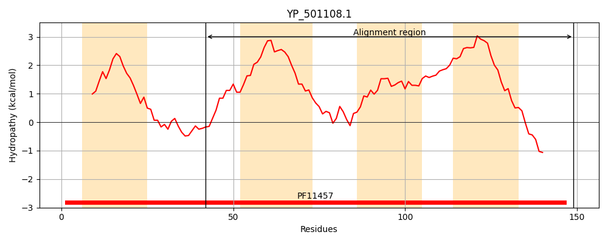
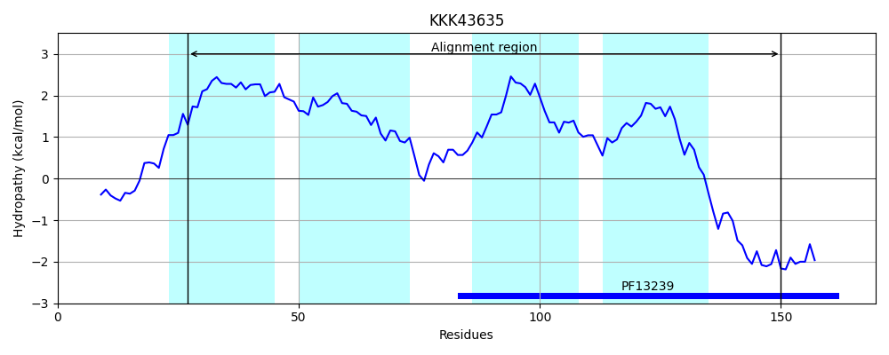
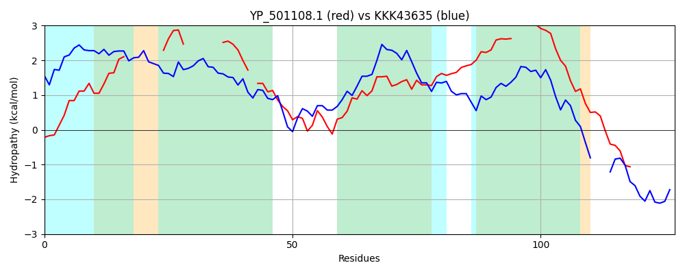

Hit Accession: KKK43635
Hit TCID: 9.B.304.1.5
Hit Description: gnl|BL_ORD_ID|5933 gnl|TC-DB|KKK43635.1|9.B.304.1.5 hypothetical protein Lokiarch_25570 [Lokiarchaeum sp. GC14_75]
Mach Len: 127
e:0.000037
Query TMS Count : 4
Hit TMS Count: 4
TMS-Overlap Score: 2.100000
Predicted Substrates:None
BLAST Alignment:
| Protein Hydropathy Plots: | |
|---|---|
|  |  |
Pairwise Alignment-Hydropathy Plot: | |
|  | |